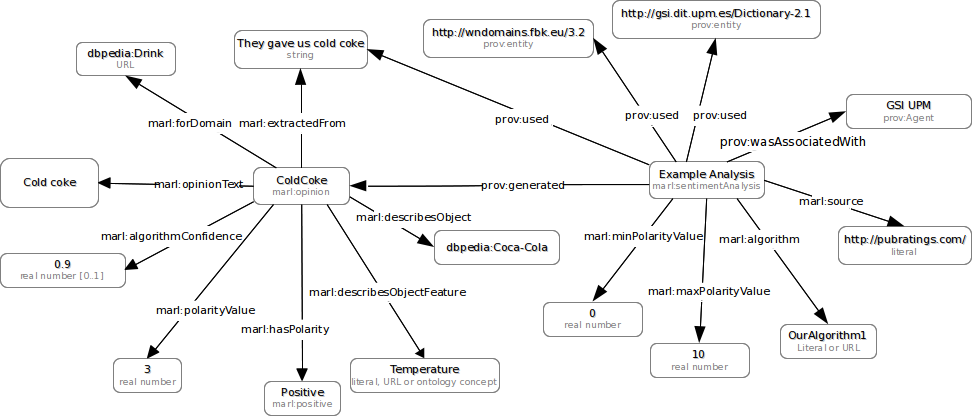

Marl Ontology Specification
V1.0 - 10 May 2013
- Introduction
- Marl ontology at a glance
- Marl ontology overview
- Cross-reference for Marl classes and properties Classes and Properties
- document wide sentiment analysis
- sentence sentiment analysis
- feature-based sentiment analysis
- enable to publish raw data about opinions and the sentiments expressed in them
- deliver schema that will allow to compare opinions coming from different systems (polarity, topics, features)
- interconnect opinions by linking them to contextual information expressed with concepts from other popular ontologies or specialised domain ontologies
- Added Provenance concepts
- Added SentimentAnalysis activity
- Added a number of properties based on ontology evaluation with live datasets
- marl:opinionCount, marl:negativeOpinionCount, marl:positiveOpinionCount, marl:neutralOpinionCount can be used with AggregatedOpinion class to express amount of aggregated opinions
- marl:opinionText can be used with Opinion class to describe the exact text extract that the Opinion class describes (in case extractedFrom has many opinions)
- First version of the document
| This version: | http://lab.gsi.dit.upm.es/ontologies/marl/ns/1.0 (RDF/XML, HTML) |
| Latest version: | http://lab.gsi.dit.upm.es/ontologies/marl/ns |
| Previous version: | http://purl.org/marl/0.2/ns |
| Editors: | Adam Westerski J.Fernando Sánchez |
| Authors: | Adam Westerski |
| Contributors: | See acknowledgements |

This work is licensed under a Creative Commons Attribution License. This copyright applies to the Marl Ontology Specification and accompanying documentation in RDF. This ontology uses W3C's RDF technology, an open Web standard that can be freely used by anyone.
Abstract
Marl is a standardised data schema (also referred as "ontology" or "vocabulary") designed to annotate and describe subjective opinions expressed on the web or in particular Information Systems. The following document contains the description of ontology and instructions how to connect it with descriptions of other resources.
Table of Contents
Appendixes
1 Introduction
The following specification is a formal description of metadata schema proposal that can be applied to data representing subjective opinions published on the Web. The goal of the following section is to provide the basic knowledge to comprehend the technical part of the specification. As such it shall introduce both Semantic Web and general topic of opinion representation and sentiment analysis.
An important note is that Marl ontology presented here is not a complete model to address the problem of describing and linking opinions online and inside information systems. It marly defines concepts that are not described yet by the means of other ontologies and provides the data attributes that enable to connect opinions with contextual information already defined in metadata created with other ontologies. For detailed instructions and recommendations how to fully model opinions and the results of opinion mining process refer to analysis done in the original specification of Marl.
1.1 Opinions on the Web and the opinion mining process
With the birth of Web 2.0 users started to provide their input and create content on mass scape about their subjective opinions related to various topics (e.g. opinions about movies). While this kind of content can be very beneficial for many different uses (e.g. market analysis or predictions) it's accurate analysis and interpretation has not been fully harnessed yet. Information left by the users is often very disorganised and many portals that enable user input leave the user added information unmoderated.
Opinion mining (often referred as sentiment analysis) is one of the attempts bring order to those vast amounts of user generated content. The domain focuses to analyse textual content using special language processing tools and as output provides a quantified judgement of the sentiments contained in the text (e.g. if the text expresses a positive or negative opinion).
Due to the complexity of the problem and attempts to provide efficient and fast tools the area can be divided into three main research directions:
In relation to the World Wide Web, there is a number of common uses of opinion formalisation and analysis. Firstly, it can be applied on top of search engines to find the desired content and next run it through opinion analysis software to obtain desired statistics (e.g. Swotti). Secondly, such algorithms can used within dedicated systems that use the Web to connect to particular communities and gather their opinions on very specific topics (e.g. Internet shops or review websites).
In relation to the dedicated systems (e.g. Enterprise Systems), there the community collaborative models that have proven successful in the open web are often transferred to large enterprise to enhance knowledge exchange and bring the employees together. The same opinion mining techniques can be applied in such cases to extract particular information and use it for internal statistics and to improve knowledge search across the enterprise (e.g. see use of opinion mining in Idea Management [link]).
1.2 The Semantic Web
The Semantic Web is a W3C initiative that aims to introduce rich metadata to the current Web and provide machine readable and processable data as a supplement to human-readable Web.
Semantic Web is a mature domain that has been in research phase for many years and with the increasing amount of commercial interest and emerging products is starting to gain appreciation and popularity as one of the rising trends for the future Internet.
One of the corner stones of the Semantic Web is research on inter-linkable and interoperable data schemas for information published online. Those schemas are often referred to as ontologies or vocabularies. In order to facilitate the concept of ontologies that lead to a truly interoperable Web of Data, W3C has proposed a series of technologies such as RDF and OWL. Marl uses those technologies and the research that comes within to propose an ontology for the particular goal of describing opinions and linking them with contextual information (such as opinion topic, features described in the opinion etc.).
1.3 What is Marl for?
The goals of the Marl ontology to achieve as a data schema are:
2. Marl ontology at a glance
An alphabetical index of Marl terms, by class (concepts) and by property (relationships, attributes), are given below. All the terms are hyperlinked to their detailed description for quick reference.
Classes: | AggregatedOpinion | Opinion | Polarity | SentimentAnalysis |
Properties: | aggregatesOpinion | algorithm | algorithmConfidence | describesFeature | describesObject | describesObjectPart | extractedFrom | hasOpinion | hasPolarity | maxPolarityValue | minPolarityValue | negativeOpinionCount | neutralOpinionCount | opinionCount | opinionText | polarityValue | positiveOpinionsCount | source |
3. Marl ontology overview
The Marl class diagram presented below shows connections between classes and properties used for describing opinions.
{kind=link}
3.1. Example
A very basic example below shows a single opinion annotated with Marl metadata (the second class maps the opinion structure and is shown as reference):
4. Cross-reference for Marl classes and properties
Below see a comprehensive list of all Marl classes, properties and their descriptions.
Classes and Properties (full detail)
Classes
Class: marl:AggregatedOpinion
AggregatedOpinion - The same as Opinion class but indicates that the properties of this class aggregate all the opinions specified in the "extractedFrom" source. Optionally, if the aggregatesOpinion property is used this class could be created to aggregate only certain opinions (e.g. in a text about political scene it there could be many AggregatedOpinion classes each with opinions per different politician).| Status: | unknown |
|---|---|
| Properties include: | positiveOpinionsCount aggregatesOpinion negativeOpinionCount neutralOpinionCount opinionCount |
| Sub class of | Opinion |
[#] [back to top]
Class: marl:Opinion
Opinion - Describes the concept of opinion expressed in a certain text.| Status: | unknown |
|---|---|
| Properties include: | opinionText describesFeature extractedFrom describesObject describesObjectPart polarityValue domain hasPolarity algorithmConfidence |
| Used with: | aggregatesOpinion hasOpinion |
| Sub class of | http://www.w3.org/ns/prov#:Entity |
| Has sub class | AggregatedOpinion |
[#] [back to top]
Class: marl:Polarity
Polarity - Class that represents the opinion polarity. Use instances to express if the polarity is positive, neutral or negative.| Status: | unknown |
|---|---|
| Used with: | hasPolarity |
[#] [back to top]
Class: marl:SentimentAnalysis
SentimentAnalysis -The action of analysing the sentiment in an entity. It produces a marl:opinion
| Status: | unknown |
|---|---|
| Properties include: | algorithm maxPolarityValue source minPolarityValue |
| Sub class of | http://www.w3.org/ns/prov#:Activity |
[#] [back to top]
Properties
Property: marl:aggregatesOpinion
aggregatesOpinion - Indicates that the polarity described with the class is a calculation (eg. sum) of other opinions polarity (eg. aggregated opinion about the movie derived from many sentiments expressed in one text).| Status: | unknown |
|---|---|
| Domain: | AggregatedOpinion |
| Range: | Opinion |
[#] [back to top]
Property: marl:algorithm
algorithm - The algorithm used in the Sentiment Analysis.| Status: | unknown |
|---|---|
| Domain: | SentimentAnalysis |
[#] [back to top]
Property: marl:algorithmConfidence
algorithmConfidence - A numerical value that describe how much the algorithm was confident of the assessment of the opinion (eg. how much the opinion matches a gives object/product).| Status: | unknown |
|---|---|
| Domain: | Opinion |
| Range: | xsd:float |
[#] [back to top]
Property: marl:describesFeature
describesFeature - Indicates a feature of an object or object part that the opinion refers to (eg. laptop battery life or laptop battery size etc.).| Status: | unknown |
|---|---|
| Domain: | Opinion |
[#] [back to top]
Property: marl:describesObject
describesObject - Indicates the object that the opinion refers to.| Status: | unknown |
|---|---|
| Domain: | Opinion |
[#] [back to top]
Property: marl:describesObjectPart
describesObjectPart - Indicates a particular element or part of the object that the opinion refers to (eg. laptop screen or camera battery).| Status: | unknown |
|---|---|
| Domain: | Opinion |
[#] [back to top]
Property: marl:extractedFrom
extractedFrom - Indicates the text from which the opinion has been extracted.| Status: | unknown |
|---|---|
| Domain: | Opinion |
| Inverse property of | the anonymous defined property with the label 'hasOpinion' (Object Property) |
| Has inverse property | hasOpinion |
[#] [back to top]
Property: marl:hasOpinion
hasOpinion - Indicates that a certain text has a subjective opinion expressed in it.| Status: | unknown |
|---|---|
| Range: | Opinion |
| Inverse property of | the anonymous defined property with the label 'extractedFrom' (Object Property) |
| Has inverse property | extractedFrom |
[#] [back to top]
Property: marl:hasPolarity
hasPolarity - Indicates if the opinion is positive/negative or neutral. Use instances of class marl:Polarity.| Status: | unknown |
|---|---|
| Domain: | Opinion |
| Range: | Polarity |
[#] [back to top]
Property: marl:maxPolarityValue
algorithmConfidence - Maximal possible numerical value for the opinion.| Status: | unknown |
|---|---|
| Domain: | SentimentAnalysis |
[#] [back to top]
Property: marl:minPolarityValue
minPolarityValue - Lowest possible numerical value of the opinion.| Status: | unknown |
|---|---|
| Domain: | SentimentAnalysis |
[#] [back to top]
Property: marl:negativeOpinionCount
negativeOpinionCount - Amount of negative opinions aggregated.| Status: | unknown |
|---|---|
| Domain: | AggregatedOpinion |
[#] [back to top]
Property: marl:neutralOpinionCount
neutralOpinionCount - Amount of neutral opinions aggregated.| Status: | unknown |
|---|---|
| Domain: | AggregatedOpinion |
[#] [back to top]
Property: marl:opinionCount
opinionCount - Amount of all aggregated opinions.| Status: | unknown |
|---|---|
| Domain: | AggregatedOpinion |
[#] [back to top]
Property: marl:opinionText
opinionText - The exact text extract that expresses the opinion. This can be used when entity/text pointed by extractedFrom contains many opinions. For example extractedFrom can point to a comment that contains many opinions about a movie, each opinion should have a separate marl:Opinion and optionally an opinionText property to indicate the specific text fragment of the comment.| Status: | unknown |
|---|---|
| Domain: | Opinion |
[#] [back to top]
Property: marl:polarityValue
polarityValue - A numerical representation of the polarity value. The recommended use is by specifying % by using a real number from 0..1. In case this is not feasible in a given solution use minOpinionValue and maxOpinionValue to provide additional information.| Status: | unknown |
|---|---|
| Domain: | Opinion |
[#] [back to top]
Property: marl:positiveOpinionsCount
positiveOpinionCount - Amount of positive opinions aggregated.| Status: | unknown |
|---|---|
| Domain: | AggregatedOpinion |
[#] [back to top]
Property: marl:source
source - Source from which the opinion was extracted (URL, Site, Entity...)| Status: | unknown |
|---|---|
| Domain: | SentimentAnalysis |
[#] [back to top]
A Changelog
2013-05-10
2011-03-13
2011-01-27
B Acknowledgements
This documentation has been generated automatically from the most recent ontology specification in OWL using a python script called SpecGen. The style formatting has been inspired on FOAF specification.
Special thanks for support with ontology creation and research to: Prof. Carlos A. Iglesias and members of the GSI Group of DIT department of Universidad Politécnica de Madrid.
This ontology has been modified and updated to be used in the EUROSENTIMENT Project